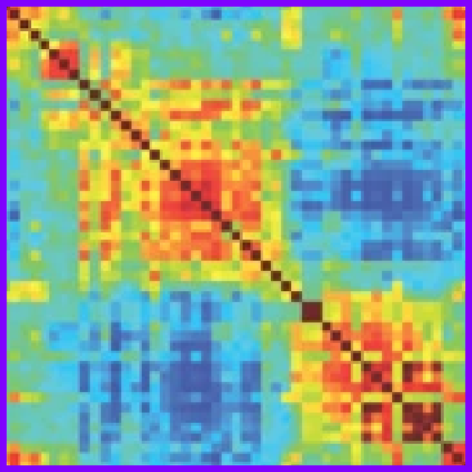
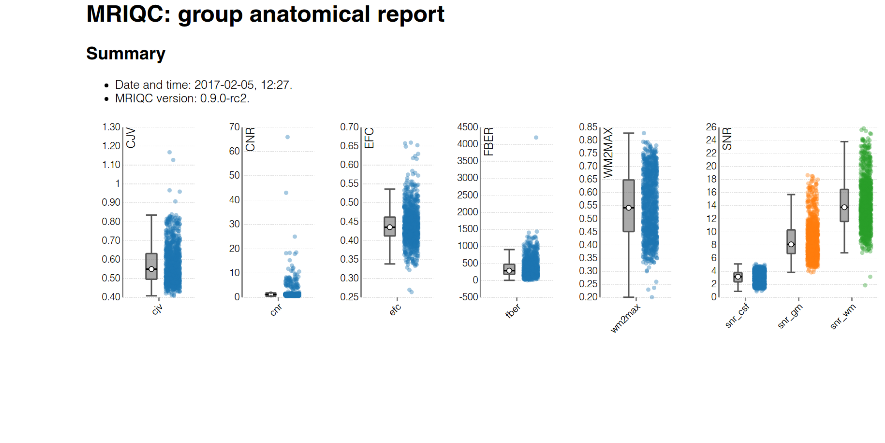
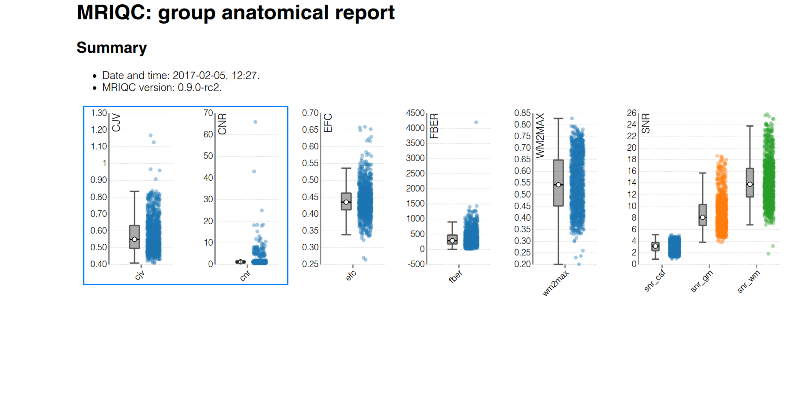
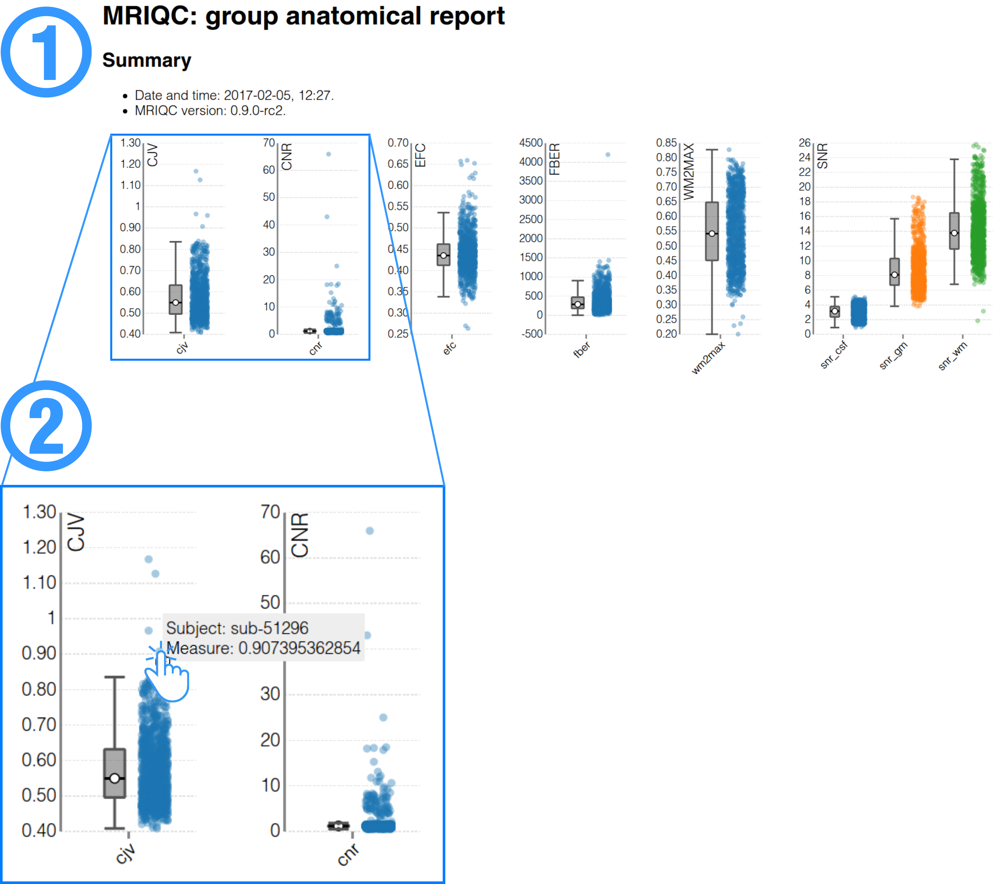

name: title layout: true class: cover --- count: false counter: false .section-mark.center[ <a href="https://www.nipreps.org/presentations/2025-MRITogether/index.html"> <object type="image/svg+xml" data="images/qr-talk-url.svg" style="width: 20%"></object> <br /> https://www.nipreps.org/presentations/2025-MRITogether/ </a> <br /> <br /> ## Analysis-Grade MRI at Scale: the NiPreps experience Oscar Esteban <<code>nipreps@gmail.com</code>> <br /> ### MRI Together — Online, Dec 11, 2025 ] ??? --- name: newsection layout: true .perma-sidebar[ <p class="rotate"> <a rel="license" href="http://creativecommons.org/licenses/by/4.0/"><img alt="Creative Commons License" style="border-width:0; height: 20px; padding-top: 6px;" src="https://i.creativecommons.org/l/by/4.0/88x31.png" /></a> <span style="padding-left: 10px; font-weight: 600;">MRI Together Workshop — NiPreps (Dec 11<sup>th</sup>, 2025)</span> </p> ] --- # About me .large[ **Data scientist** who plays with brain data & **open science** advocate. ] .right-column3.center[ <a href="https://www.nipreps.org/presentations/2025-MRITogether/index.html"> <object type="image/svg+xml" data="images/qr-talk-url.svg" style="width: 80%"></object> <br /> Link to slides </a> ] .pad-top.left-column3[ .people-table.larger[ | | | |---:|---| |  | **Oscar Esteban** <br /> Associate Professor & Head of [AxonLab](https://www.axonlab.org) <br /> School of Engineering <br /> HES-SO University of Applied Sciences and Arts Western Switzerland | ] * Research & Teaching FNS Fellow (2025) @ Lausanne University Hospital * PD (2020) @ Stanford University * Ph.D. (2015) @ Universidad Politécnica de Madrid <br />ESKAS (2012) @ EPFL ] --- counter: false .section-mark.center[ # What and why? ## Analytical variability & preprocessing ] ??? --- # The research workflow of network analyses .boxed-content[ <object type="image/svg+xml" data="../assets/neuroimaging-workflow-large.svg" style="width: 100%; padding-top: 20pt;"></object> .center[ [Esteban et al., (2020)](http://doi.org/10.1038/s41596-020-0327-3); [Niso et al., (2022)](https://doi.org/10.1016/j.neuroimage.2022.119623) ] ] ??? In broad strokes, this is the MRI-based network analysis pipeline. Interestingly, it looks like any machine learning pipeline: we acquire data, perform quality control, preprocess it, define features, and then apply statistical modeling to extract insights. For a deeper dive into the details of the neuroimaging worflow, I've participated in several efforts such as the two references given below. --- count:false # The research workflow of network analyses .boxed-content[ <object type="image/svg+xml" data="../assets/neuroimaging-workflow-1.svg" style="width: 100%; padding-top: 20pt;"></object> .center[ [Esteban et al., (2017)](https://doi.org/10.1371/journal.pone.0184661); [Provins et al., (2023)](https://doi.org/10.3389/fnimg.2022.1073734); <br /> [Provins et al., (2025)](https://doi.org/10.1371/journal.pbio.3003149) [Hagen et al., (2025, *accepted*)](https://doi.org/10.1101/2024.10.21.619532) ] <br /> .no-bullet[ * .larger[<i class="fa-solid fa-clipboard-list"></i> Run the **MRI experiment** following Standard Operating Procedures (SOPs)] * <i class="fa-solid fa-folder-tree"></i> .larger[**Standardized data structure** (BIDS—Brain Imaging Data Structure)] * .larger[<i class="fa-solid fa-square-check"></i> **QA/QC** (Quality assurance / control)] ] ] ??? The pipeline starts with data acquisition, management and quality assurance and control (QA/QC). My early work on QA/QC applied machine learning to automatically assess MRI images of the brain, and raised awareness over issues like “site effects”—where data from different scanners or labs can systematically vary, much like “batch effects” in genomics. One key principle in AI is that models are only as good as their data and neuroimaging is no exception. This is why my group and I have been deeply involved in BIDS, produced version-controlled, machine-readable standard operating procedures, developed comprehensive QA/QC protocols and created ready-to-use applications to detect suboptimal data early. --- count:false # The research workflow of network analyses .boxed-content[ <object type="image/svg+xml" data="../assets/neuroimaging-workflow-2.svg" style="width: 100%; padding-top: 20pt;"></object> .center[ [Esteban et al., (2019)](https://doi.org/10.1038/s41592-018-0235-4); [Ciric et al., (2022)](https://doi.org/10.1038/s41592-022-01681-2); [Adebimpe et al., (2022)](https://doi.org/10.1038/s41592-022-01458-7) ] <br /> .no-bullet[ * .larger[<i class="fa-solid fa-smog"></i> Detection of **nuisance sources**] * .larger[<i class="fa-solid fa-magnifying-glass-location"></i> Spatiotemporal **location** of signals] * .larger[<i class="fa-solid fa-location-crosshairs"></i> Definition of **brain units** of analysis (regions)] ] ] ??? Next in the pipeline is preprocessing, which transforms raw data into something models can reliably interpret. For example, it identifies signals of no interest for their cleaning or accounting within modeling. In neuroimaging, preprocessing also deals with accurately locating signals and objects in space and time, and often the definition of relevant brain regions that focus the analysis. A decade ago, we might have called it “feature engineering.” Regardless of the term, it’s crucial: “preprocessing” is now a keyword in job posts at major players like Anthropic, DeepMind, and OpenAI. --- # fMRIPrep: despite minimal, a complex workflow .boxed-content.center[ <object type="image/svg+xml" data="../assets/fmriprep-natmeth-fig01-inkscape.svg" style="width: 75%;"></object> ] ??? Here I'm showing a very much simplified overview of fMRIPrep's design. Despite it being just "minimal" preprocessing and just one step of the pipeline, its complexity is evident. Rather than delving into each of these steps, I'll just say that there's a current need to update and improve computer vision algorithms and approaches (segmentation, image registration, dimensionality reduction, etc.) with AI/ML all across the dataflow. --- count:false class: stepwise-svg # fMRIPrep: despite minimal, a complex workflow .boxed-content.center[ <object type="image/svg+xml" data="../assets/fmriprep-natmeth-fig01-inkscape.svg" style="width: 75%;"></object> ] ??? --- # fMRIPrep: generalizing further .boxed-content.center[ <object type="image/svg+xml" data="https://www.nipreps.org/identity/fmriprep/fmriprep-21.0.0-inkscape.svg" style="width: 95%; padding-top: 15pt"></object> ] ??? --- # TemplateFlow: FAIR access to templates .boxed-content.center[ <img src="https://www.templateflow.org/assets/templateflow_fig-birdsview.png" style="width: 70%; padding-top: 10pt" /> ] ??? --- # The research workflow of network analyses .boxed-content[ <object type="image/svg+xml" data="../assets/neuroimaging-workflow-3.svg" style="width: 100%; padding-top: 20pt;"></object> .center[ [Thompson et al., (2021, *under review*)](https://doi.org/10.1101/2021.01.16.426941); [Rodrigue et al., (2021)](https://doi.org/10.1016/j.bpsc.2020.12.002); [Li et al., (2024)](https://doi.org/10.1038/s41562-024-01942-4) ] ] .pull-right[ <p></p> <br /> **Functional Connectivity (FC)** <br /> .gray-text[Synchronized BOLD co-variation between brain regions] ] .pull-left.align-right[ <img src="../assets/matrix-sc.png" alt="matrix-fc" style="width: 20%" /> <br /> **Structural Connectivity (SC)** <br /> .gray-text[Tracked water diffusion pathways between brain regions] ] ??? Once data are ready for analysis, we formalize connectivity as undirected acyclic graphs, represented with symmetric matrices. In the case of structural connectivity, we use diffusion MRI to track pathways of white-matter bundles connecting brain regions. For functional connectivity we measure synchronized functional MRI signal fluctuations sensitive to the dynamic oxygen content in blood. I’ve been involved in several works applying structural and functional connectivity. For instance, in Rodrigue 2021, we explored ML approaches to identify clinical biomarkers. Unfortunately, we had to conclude that, despite promising data quality and reliability remain insufficient for robust biomarker discovery. --- # Despite active research, scarce clinical application .boxed-content[ .center[ <object type="image/svg+xml" data="../assets/neuroimaging-workflow-large.svg" style="width: 100%; padding-bottom: 10pt; padding-top: 20pt;"></object> ] .no-bullet[ * .large[<i class="fa-solid fa-triangle-exclamation"></i> Alarming **analytical variability**:] * .larger[Diffusion MRI [[Maier-Hein et al., (2015)](https://doi.org/10.1038/s41467-017-01285-x)]] * .larger[Functional MRI [[Botvinik-Nezer et al., (2020)](https://doi.org/10.1038/s41586-020-2314-9)]] <br /> * .large[<i class="fa-solid fa-dna"></i> **Like genomics** between HGP (2003) and NGS (2015)?] ] ] ??? Therefore, although simple on the surface, the workflow is highly-complex and each step introduces potential variability. Complicating matters further, every lab around the world might use a slightly different pipeline. Different tools, different parameters—lead to inconsistent results. This fragmentation hinders progress and precludes between-study comparisons. The consequence is an acute scarcity of real-world applications of connectivity analyses. Let's compare to genomics. Neuroimaging is today in an early stage of standardization akin to genomics at the conclusion of the Human Genome Project in 2003. One key aspect for the remarkable advance of genomics is precisely the comprehensive standardization process of the pipeline that culminated some 10 years ago. For that reason, I advocate for replicating this success experience in neuroscience. --- # Analytical variability in dMRI <figure style="width: 70%">  <figcaption>From <a href="https://doi.org/10.1038/s41467-017-01285-x">Maier-Hein et al. 2017</a>; doi:</figcaption> </figure> --- count:false # Analytical variability in dMRI .vertical-center[ .center.white-bg[ .large[ ***Tractography-based connectomes are dominated by false-positive connections*** ] Draft title (2015) - doi:[10.1101/084137](https://doi.org/10.1101/084137) ] ] <div style="background-image: url(https://oesteban.github.io/talks/NEMES-GU-2025/images/tractography-challenge.png); background-size: cover; height: 80%; width: 80%; margin-left: 180px; opacity: 0.1"> </div> --- # Analytical variability in fMRI <figure style="width: 65%">  <figcaption>From <a href="https://doi.org/10.1038/s41586-020-2314-9">Botvinik-Netzer et al. 2020</a>; doi:</figcaption> </figure> --- count: false # Despite active research, no real-world application .boxed-content[ .center[ <object type="image/svg+xml" data="../assets/neuroimaging-workflow-large.svg" style="width: 100%; padding-bottom: 10pt; padding-top: 20pt;"></object> ] .no-bullet[ * .large[<i class="fa-solid fa-triangle-exclamation"></i> Alarming **analytical variability**:] * .larger[Diffusion MRI [[Maier-Hein et al., (2015)](https://doi.org/10.1038/s41467-017-01285-x)]] * .larger[Functional MRI [[Botvinik-Nezer et al., (2020)](https://doi.org/10.1038/s41586-020-2314-9)]] <br /> * .large[<i class="fa-solid fa-magnifying-glass-plus"></i> Insufficient **test-retest reliability** at the finer scales of brain units] * .larger[[Nakuci et al., (2023)](https://doi.org/10.1038/s41598-023-33441-3)]] ] ??? On top of all that methodological variability, there’s also inherent unreliability in measuring connectivity from session to session. If you scan the same participant twice, back-to-back, you can still get different connectivity measurements, indicating limited test-retest reliability. Despite all these concerns, more than 20 thousand papers were published focusing on functional connectivity and 10 thousand on structural connectivity in 2024, as per Pubmed. --- .center[ <object type="image/svg+xml" data="../assets/reproducible-definition-grid.svg" style="width: 68%"></object> .small[ *The Turing Way project* illustration by Scriberia. Used under a CC-BY 4.0 licence. doi:<a href="https://doi.org/10.5281/zenodo.3332807">10.5281/zenodo.3332807</a>.] ] --- # More reliable measurements .center[ .boxed-content[ <object type="image/svg+xml" data="../assets/reproducible-definition-grid-axes-0.svg" style="width: 65%;"></object> [Esteban, (2025)](https://doi.org/10.1007/978-1-0716-4260-3_8) [[Methods for analyzing large neuroimaging datasets](https://doi.org/10.1007/978-1-0716-4260-3)] ] ] --- count: false # More reliable measurements .center[ .boxed-content[ <object type="image/svg+xml" data="../assets/reproducible-definition-grid-axes-1.svg" style="width: 65%;"></object> [Esteban, (2025)](https://doi.org/10.1007/978-1-0716-4260-3_8) [[Methods for analyzing large neuroimaging datasets](https://doi.org/10.1007/978-1-0716-4260-3)] ] ] --- count: false # More reliable measurements .center[ .boxed-content[ <object type="image/svg+xml" data="../assets/reproducible-definition-grid-axes-3.svg" style="width: 65%;"></object> [Esteban, (2025)](https://doi.org/10.1007/978-1-0716-4260-3_8) [[Methods for analyzing large neuroimaging datasets](https://doi.org/10.1007/978-1-0716-4260-3)] ] ] --- count: false # More reliable measurements .center[ .boxed-content[ <object type="image/svg+xml" data="../assets/reproducible-definition-grid-axes-2.svg" style="width: 65%;"></object> [Esteban, (2025)](https://doi.org/10.1007/978-1-0716-4260-3_8) [[Methods for analyzing large neuroimaging datasets](https://doi.org/10.1007/978-1-0716-4260-3)] ] ] --- counter: false .section-mark.center[ # NiPreps ## NeuroImaging PREProcessing toolS ] ??? --- .boxed-content[ <br /> <br /> .large.center[ "*analysis-grade*" data <i class="fa-solid fa-circle-right"></i> data **directly consumable by analyses** <br /> <br /> ] .pull-left[ <br /> <br /> *Analysis-grade* data is an analogy to the concept of "*sushi-grade (or [sashimi-grade](https://en.wikipedia.org/wiki/Sashimi)) fish*" in that both are: .large[<i class="fa-solid fa-circle-right"></i> **minimally preprocessed**,] and .large[<i class="fa-solid fa-circle-right"></i> **safe to consume** directly.] ] .pull-right.center[ <img src="https://raw.githubusercontent.com/nipreps/identity/refs/heads/main/nipreps-general/nipreps-transparent.png" width="100%" /> <a href="https://www.nipreps.org"><object type="text/xml+svg" data="https://www.nipreps.org/identity/nipreps-general/qr-code.svg" style="width: 40%"></object><br /> www.nipreps.org</a> ] ] ??? In computational neuroscience I'm recognized by my standardization efforts. NiPreps is a framework for standardized preprocessing pipelines in neuroimaging. I often use the “sushi-grade” analogy just like sushi-grade fish is minimally processed but safe to consume, NiPreps yields “analysis-grade” data, with minimal processing interventions but ready for direct machine learning ingestion. --- # NiPreps: 113 members + a robot .boxed-content.center[ <img style="width: 90%" src="https://raw.githubusercontent.com/nipreps/identity/refs/heads/main/nipreps-general/nipreps-members.png" /> ] --- class: stepwise-svg .boxed-content.center[ <object type="image/svg+xml" data="../assets/nipreps-chart.svg" style="width: 80%; padding-top: 5pt"></object> ] --- # Tracking *fMRIPrep*'s adoption .center[ <img src="https://www.nipreps.org/assets/20251117_weekly.png" style="width: 90%; padding-top: 10pt" /><br /> ] --- # Tracking *fMRIPrep*'s usage <br /> .larger[ <i class="fa-solid fa-circle-right"></i> It's critical to report **exact versions** <i class="fa-solid fa-circle-right"></i> Semantics inform about compatibility: **24.0.1** <i class="fa-solid fa-circle-right"></i> Long-term support (LTS) program. ] .center[ <img src="https://oesteban.github.io/talks/NEMES-GU-2025/images/20250204_versionstream.png" style="width: 90%; padding-top: 10pt" /><br /> ] --- # Standard Operating Procedures (SOPs) .boxed-content[ <iframe src="https://www.axonlab.org/hcph-sops/" width="100%" height="510px" style="border: 0; margin-top: 15px"></iframe> .center.small[https://www.axonlab.org/hcph-sops/] ] --- # Standardization in neuroimaging—impact .boxed-content.larger.no-bullet[ * .large[<i class="fa-solid fa-hands-clapping"></i> **Not just wide adoption**] .indent[.gray-text[Used in large neuroscientific endeavors: ENIGMA] .gray-text[Industry: [Flywheel's gears for *MRIQC* and *fMRIPrep*](https://flywheel.io/insights/blog/comprehensive-support-bids#:~:text=The%20Flywheel%20Gear%20Exchange%20currently,to%20download%20your%20entire), [Amazon Web Services featured *fMRIPrep*](https://aws.amazon.com/blogs/opensource/fmri-data-preprocessing-aws-fmriprep/#:~:text=itself,efforts%20on%20preprocessing%20fMRI%20data), [QMENTA's RS fMRI tool derived from *fMRIPrep*](https://catalog.qmenta.com/tool/resting-state-fmri#:~:text=Catalog%20catalog,Networks%3B%20%E2%80%A2%20Salience%20Network) ] .gray-text[Relevant works: [Caucheteux, Gramfort & King, (2023)](https://doi.org/10.1038/s41562-022-01516-2), [Tozzi et al., (2024)](https://doi.org/10.1038/s41591-024-03057-9), [Hyon et al., (2020)](https://doi.org/10.1073/pnas.2013606117), [Yamashita et al., (2020)](https://doi.org/10.1371/journal.pbio.3000966). ] ] * .large[<i class="fa-solid fa-people-group"></i> **Built a Lasting Community**] .indent[ .gray-text[100+ researchers engaged in the community worldwide] .gray-text[Community is critical to provide a footing for standardization (following BIDS' experience)] ] * .large[<i class="fa-solid fa-industry"></i> **DevOps-inspired standardization**] .indent[ .gray-text[Reducing the gap between research and application reversing the transference flow] ] ] ??? Beyond citations and the staggering usage figures I showed in my first presentation, NiPreps is a major achievement by DORA principles. NiPreps is used in large consortia like ENIGMA, given a foundation to pioneering clinical applications such as Tozzi 2024, and is offered by major industry players like Flywheel, QMENTA, and even AWS workflows. The NiPreps framework is driven by a community involving more than 100 scientist globally and their adoption continues growing. That’s the real impact: it’s changing how people conduct imaging studies and ensuring higher data quality across labs. One distinct reason for success is that we contributed to bridge the gap between research and real-world applicationi by reversing the typical knowledge transference flow: We integrate software engineering best practices from devops and industry for the standardization and solidification of the neuroimaging workflow. --- # What's next? .boxed-content.large.no-bullet[ * .large[<i class="fa-solid fa-meteor"></i> **PETPrep officially released**] .indent.gray-text[Plans for a *FactoryPrep* that allows creating neuroimaging workflows] <br /> * .large[<i class="fa-solid fa-route"></i> The *fit&transform paradigm*] .indent.gray-text[Lightweight, deterministically reproducible outputs] <br /> * .large[<i class="fa-solid fa-icicles"></i> **NiFreeze** head motion estimation for all] .indent.gray-text[Estimating (and correcting) head motion across modalities] ] ??? --- class: stepwise-svg # Future: fit & transform .boxed-content.center[ <object type="image/svg+xml" data="../assets/fmriprep-fit-transform-inkscape.svg" style="width: 100%; padding-top: 20pt"></object> ] --- class: stepwise-svg # Introducing *NiFreeze* .boxed-content.center[ <object type="image/svg+xml" data="../assets/nifreeze-flowchart.svg" style="width: 90%; padding-top: 20pt"></object> ] --- counter: false .section-mark.center[ # QA/QC ] ??? --- # QA/QC of the neuroimaging worflow .boxed-content[ .center[ <object type="image/svg+xml" data="../assets/neuroimaging-workflow-large.svg" style="width: 90%; padding-bottom: 55.5pt; padding-top: 120pt;"></object> ] .align-right[ ([Provins et al., 2023](http://doi.org/10.3389/fnimg.2022.1073734)) ] ] ??? --- class: stepwise-svg # QA/QC of the neuroimaging worflow .boxed-content[ .center[ <object type="image/svg+xml" data="../assets/provins-qaqc-protocol.svg" style="width: 100%; padding-bottom: 5pt; padding-top: 40pt;"></object> ] .align-right[ ([Provins et al., 2023](http://doi.org/10.3389/fnimg.2022.1073734)) ] ] --- # QA/QC protocols: 'Swiss-cheese security model' .boxed-content[ .center[ <object type="image/svg+xml" data="../assets/provins-qaqc-protocol.svg" style="width: 60%; padding-bottom: 10pt; padding-top: 10pt;"></object> <object type="image/svg+xml" data="../assets/swiss-cheese.svg" style="width:60%"></object> .small[ [BenAveling @ wikipedia](https://en.wikipedia.org/wiki/Swiss_cheese_model#/media/File:Swiss_cheese_model_textless.svg) ] ] ] ??? For those with knowledge about security protocols, this approach will surely evoke the Swiss cheese model. The model assumes that all QC checkpoints will have holes through which data progresses toward analysis. By layering several QC checkpoints looking at the data in different ways, we make sure that images with potential to bias the results do not make all the way through the workflow. --- ## MRIQC: QA/QC of unprocessed data <br /> <br /> .boxed-content[ .center[ <img src="../assets/mriqc-paper.png" alt="workflow" style="width: 80%;" /> ] <br /> .align-right[ ([Esteban et al., 2017](http://doi.org/10.1371/journal.pone.0184661)) ] ] ??? We created MRIQC at Stanford back in 2016, to assess anatomical and functional images shared through OpenNeuro. --- ## MRIQC: QA/QC of unprocessed data .boxed-content.center[ <p></p> ] ??? MRIQC provides support for visual and automated assessment. Visual assessment is supported with the individual reports, which I'll introduce later. Automated assessment can be built on a number of image quality metrics that we extract from every image. In this slide, you can see a "group" report generated by MRIQC, plotting several image quality metrics corresponding to the T1w images in a large dataset. --- count:false ## MRIQC: QA/QC of unprocessed data .boxed-content.center[ <p></p> ] ??? Let's focus on the two first, which are the coefficient of joint variation of gray and white matter, and the contrast-to-noise ratio. --- count:false ## MRIQC: QA/QC of unprocessed data .boxed-content.center[ <p></p> ] ??? If we zoom in, we can find some datapoints where these two particular metrics are outlying. We can click on the particular datapoint, and the individual report opens up in our screen. --- count:false ## MRIQC: QA/QC of unprocessed data .boxed-content.center[ <img src="../assets/04-mriqc-group.png" alt="workflow" style="width: 60%" /> ] ??? In this case, we can see how this particular T1 weighted image has obvious head motion patterns that probably makes it unusable for almost any application. --- # MRIQC: dMRI reports (HCPh) .boxed-content[ <iframe src="https://mriqc.s3.amazonaws.com/hcph/group_dwi.html" style="border: 0; width: 100%; height: 550px; margin-top: 10px"></iframe> ] ??? --- # MRIQC: dMRI reports (HBN) .boxed-content[ <iframe src="https://mriqc.s3.amazonaws.com/hbn100/group_dwi.html" style="border: 0; width: 100%; height: 550px; margin-top: 10px"></iframe> ] ??? --- ## Browse yourself: 100 Healthy Brain Network <br /> .boxed-content[ .pull-left.center[ ### Browseable reports <a href="https://mriqc.s3.amazonaws.com/hbn100/group_dwi.html"></a> ] .pull-right.center[ ### Datalad / Git annex <a href="https://github.com/nipreps-data/derivatives-mriqc-hbn"></a> ] ] ??? --- # Does defacing influence QA/QC decisions? .right-column3[ .larger.center[ .large[**Registered Report**] <br /> (PLOS Biology) <a href="https://doi.org/10.1371/journal.pbio.3003149"><object type="image/svg+xml" data="https://oesteban.github.io/talks/assets/qr-provins-2025-RR.svg" style="width: 85%;"></object> Provins et al., (2025)</a> ] ] .left-column3[ <img src="https://oesteban.github.io/talks/assets/defacing-RR-figure1.png" style="width: 90%; padding-top: 25pt" /><br /> ] ??? --- count: false # Thank you! .right-column3.center[ <a href="https://www.nipreps.org/presentations/2025-MRITogether/"><object type="image/svg+xml" data="images/qr-talk-url.svg" style="width: 60%"></object></a> Oscar Esteban <<code><a href="mailto:phd@oscaresteban.es">nipreps@gmail.com</a></code>> **MRI Together, Dec 11<sup>th</sup>, 2025** ] .left-column3[ .center[ The **NiPreps Community** <img style="width: 90%" src="https://raw.githubusercontent.com/nipreps/identity/refs/heads/main/nipreps-general/nipreps-members.png" /> <a href="https://www.axonlab.org"><img style="width: 200px;" src="https://oesteban.github.io/talks/assets/axonlab_logo.png" alt="AxonLab website" /></a> <br /> <br /> <img src="https://oesteban.github.io/talks/assets/snsf_logo.png" style="width:180px;" alt="SNSF" /> <img src="https://oesteban.github.io/talks/assets/nimh_logo.png" style="width:180px;" alt="NIMH" /> <img src="https://oesteban.github.io/talks/assets/czi_logo.png" style="width:100px;" alt="CZI" /> ] ] ??? ]